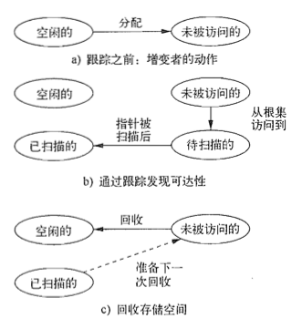
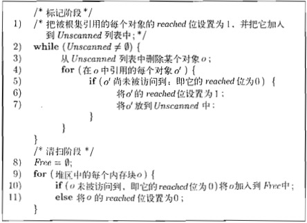
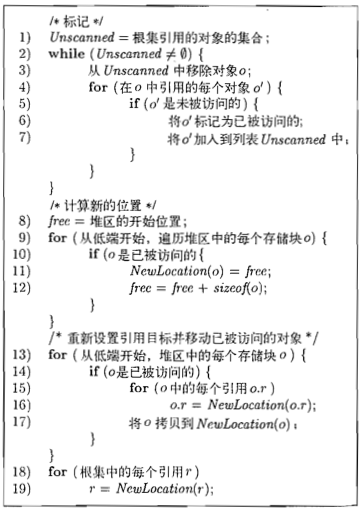
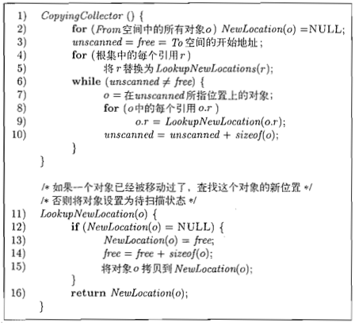

垃圾回收(Garbage Collection)入门
前言
最近在看《Concurrency in Go》的时候，突然开始思考垃圾回收的问题。想起之前在学习Python的时候，对垃圾回收机制也只是简单了解，网上博客的说法也不是很统一，所以这次决定系统地了解一下。查了网上的一些资料，最后追踪到《编译原理》（龙书）第7章，在这里稍微做一下整体的总结，不针对具体的编程语言。内容可能偏向表面概念，具体算法实现如果日后有精力深究，再去详细分析，这只是先从概念上入门理解。
相关概念
garbage（垃圾）
不能被引用到数据通常被称为“垃圾(garbage)”。“能否被引用到”主要通过“可达性(reachability)”这一概念来进行描述。显然，只有两种状态可以用来描述一个对象：可达(reachable)或不可达(unreachable)。同时，一个对象被创建，状态由可达转变为不可达，一定是由用户程序操作的结果，这个用户程序，在垃圾回收这个论题中，通常被称为“增变者(mutator)”。当某些对象对于增变者来说不可达的时候，它们就转变为了垃圾。
reachability（可达性）
可达性是基于跟踪的垃圾回收方式判断一个对象是否为垃圾的关键指标。可达(reachable)对象的集合随着程序的运行而改变。当新的对象被创建，这个集合就会增长；当某些对象变得不可达(unreachable)，这个集合就随之缩小。最重要的是，当一个对象变得不可达，它就不可能再次变得可达。
一个增变者(mutator)改变可达对象集合的方式有以下四种：
- 对象创建（Object Allocations）
- 参数传递（Parameter Passing）和值的返回（Return Values）
- 引用赋值（Reference Assignments）
- 程序返回（Procedure Returns）
前几项都比较容易理解，也很好想象出对应的场景，但最后一项还需要解释一下。Procedure，常常被翻译为“程序”或者“过程”，它和Program“程序”的主要区别在于，Program更多指的是一个完整的计算机程序，而Procedure指的是一段完成特定功能的程序片段。在这里的Procedure Returns可以理解成比如一次函数调用。当函数执行结束并返回的时候，函数调用栈(Stack)的栈帧(Frame)弹出，如果栈帧中保存了对某个对象唯一可达的引用，那么这个对象就此变为不可达。
寻找不可达对象有两种方法：
- 截获一个对象由可达转变为不可达的时刻
- 周期性地检测所有对象的可达状态
type safe（类型安全）
一种编程语言，如果它的任何数据组成部分的类型都是可以明确确定的，那么我们就说它是“类型安全(type safe)”的。类型安全的编程语言又可以分为两种：一种是数据类型可以在编译时确定的，这种被称为“静态类型语言(Statically Typed Language)”；另一种是数据类型在编译时无法确定，但可以在程序运行时确定的，被称为“动态类型语言(Dynamically Typed Language)”。类型安全是自动垃圾回收的基本条件。像C和C++，由于它们的存储地址可以支持任意操作，比如对指针进行算术运算，或将整型(Integer)转化为指针(pointer)，尽管它们的地位如此重要，但却并不适合应用自动垃圾回收机制。
在《编译原理》中，原文这样写道：A language in which the type of any data component can be determined is said to be type safe. There are type-safe language like ML, for which we can determine types at compile time. There are other type-safe languages, like Java, whose types cannot be determined at compile time, but can be determined at run time. The latter are called dynamically typed languages. Java被描述为动态类型，这里仍然有些疑问，需要进一步了解。
root set（根集）
我们把程序可以直接操作，而不需要对指针解引用(dereference)的数据的集合，称为根集。根集中的对象，是程序在任意时刻都可以直接访问的。虽然定义中描述的是“不需要指针解引用就可以访问”，但是很多情况下，编译器优化会使得实际的根集并不完全符合定义中的条件，但我们仍将它视作根集。
floating garbage（漂浮垃圾）
我们将每次垃圾回收之后被留下的垃圾，称为漂浮垃圾。这里当然不是说floating garbage会被永远的留下，由于垃圾回收会在程序运行的过程中根据条件多次触发，所以不需要每一次都做到完美回收全部垃圾，只要保证任何一次垃圾回收留下的漂浮垃圾，能在下一轮被回收，就不会产生内存泄漏的问题。
垃圾回收的性能度量
- 总体运行时间（Overall Execution Time）
- 空间使用（Space Usage）
- 暂停时间（Pause Time）
- 程序局部性（Program Locality）
前三点可能看字面意思就很容易理解，第四点在这里还需要稍微解释一下。
在《编译原理》7.4.3节中，讲到了“程序的局部性(Locality in Programs)”。局部性分为两种：一个计算机程序，当它操作的存储位置在短时间内有很大几率再次被访问，我们就说它具有“时间局部性(temporal locality)**”；当它操作的存储位置的临近空间有很大几率被访问到，我们就说它具有“空间局部性(spatial locality)**”。程序的局部性对性能的影响，主要来自于现代计算机的层次存储结构与缓存策略的特性。
垃圾回收方式分类
- 基于引用计数 (Reference Counting) 的垃圾回收
- 基于跟踪 (Trace-Based) 的垃圾回收
- 基本的标记-清除回收（Basic Mark-and-Sweep Collection）
- Baker优化的标记-清除回收（Baker’s Mark-and-Sweep Collection）
- 标记-压缩回收（Mark-and-Compact Collection）
- 拷贝回收（Copying Collection）
- 短暂停顿(Short-Pause)的垃圾回收
- 增量式回收（Incremental Collection）
- 部分回收（Partial Collection）
- 分代垃圾回收（Generational Garbage Collection）
- 列车算法（Train Algorithm）
以上是《编译原理》7.5～7.7章节的对于全部垃圾分类方式的介绍顺序和层级。乍一看这种分类的维度有点儿不太一致，前面根据判断对象是否为垃圾的方式划分，最后却又按照垃圾回收时的停顿时间分出了第三大类。根据我的理解，实际的分类维度可以有两个：
首先是最容易理解的，根据停顿的时长划分为
- 全面停顿（Stop-the-World）的垃圾回收
- 短暂停顿（Short-Pause）的垃圾回收
简单的基于跟踪的垃圾回收全都会导致程序的全面暂停，所以上面“基于跟踪的垃圾回收”全部都可以划分到STW类别。短暂停顿的垃圾回收除了上面原本的分类外，还可以把“基于引用计数的垃圾回收”划分到其中。这是因为基于引用计数的垃圾回收是可以以增量的方式进行的，它可以在不同的时间点进行逐步回收。具体的方式比如设定阈值，当不可达对象的数量到达阈值时触发回收。
然后，就是按照垃圾的判定查找方式划分为：
- 基于引用计数（Reference Counting）的垃圾回收
- 基于跟踪（Trace-Based）的垃圾回收
按照这种维度分类，再回头看上面的“短暂停顿的垃圾回收”，可以看出实际上所谓的“增量式回收”和“部分回收”只是对回收任务按照时间或空间进行了分割，使得垃圾回收的工作不再一次性完成一整轮，以此来优化程序整体的运行效果，使程序不再单次长时间地暂停，本质上的垃圾判定方式还是由具体实现决定的。
垃圾回收方式详细总结
这一部分介绍基于引用计数和基于跟踪两种垃圾回收方式的通用概念，然后简要对比几种不同的基于跟踪的垃圾回收算法。
基于引用计数的垃圾回收
根据名字不难理解，这种垃圾回收方式，确定一个对象是否为垃圾，是根据外部对它的引用数来判断的。如果一个对象的引用数为0，显然它不再被需要，它就成为了待回收的垃圾。如果一个对象的引用数大于零，一般来说它之后还会继续被使用。那么这里有个特殊情况：假定存在两个或多个对象，在某种情况下它们产生了相互引用，或者分别被对方的子对象引用，此时如果也不存在任何来自外部的引用，那么显然它们需要被回收掉（如果它们不是根集成员的话）。但是，此时它们的引用计数不为0，基于引用计数的回收器无法判定它们为垃圾，如果没有其他方式辅助判断，就会产生内存泄漏。这就是**循环引用(Cyclic References)**的问题。
那么，引用计数方式的关键点是，什么时候计数会发生改变？有以下几种情况：
这里可以参照上文“可达性”的部分，对比着来理解
- 对象创建（Object Allocation）—— 新对象的计数设置为 1
- 参数传递（Parameter Passing）—— 所有传入对象的计数 +1
- 引用赋值（Reference Assignments）—— 对于两个引用
u和v，当执行语句u = v时，u原本引用的对象引用计数 -1，而v原本引用的对象引用计数 +1 - 程序返回（Procedure Returns）—— 同样的，以函数调用为例，当函数退出时，其中的局部对象引用计数均 -1，如果多个局部变量引用了同一个对象，那么这个对象的引用计数要减去相应的数量
- 可达性丢失的传递（Transitive Loss of Reachability）—— 当一个对象的引用计数为0，它内部引用的子对象的引用计数同时也需要 -1
可以看出，以上几种会修改引用计数的场景，遍布整个程序的任何位置，可能发生在程序运行的任何时刻。因此，这带来了相应的优势和劣势：
优势：
- 回收工作可以以增量的方式进行。由于引用计数的运算分布在整个程序中，因此不必一次完成过多的垃圾判定和回收工作，可以有效的切分任务，逐步完成。对于要求较强实时性的系统来说，引用计数无疑是一种很有吸引力的垃圾回收方式。
- 垃圾可以及时回收。同样的，计数变更的及时性，也让回收工作可以更加及时进行，但这是在平衡回收效率和程序运行效率的情况下。
劣势：
- 整体开销较大。参照上面引用计数发生改变的几种情况，每一次引用赋值、程序片段的入口和出口处，都需要进行额外的计算，而且这些额外的计算遍布整个程序。同时，维护计数也需要额外的空间。
基于跟踪的垃圾回收
所有基于跟踪的垃圾回收算法，都需要计算可达对象集合，然后取其补集得到不可达对象，进行回收。因此，内存的使用流程可以归纳为以下几个步骤的循环：
- 增变者或程序运行，并发出分配请求
- 垃圾回收器通过跟踪的方式揭示对象的可达性
- 垃圾回收器回收不可达对象的存储空间
在以上几个步骤执行的过程中，对象或它们所占用的存储块(Chunks of Memory)会在以下几种状态之间变更：
- 空闲（Free）
- 未访问（Unreached）
- 未扫描（Unscanned）
- 已扫描（Scanned）
这些存储块的状态可能存储在其内部，也可能由垃圾回收算法中特定的数据结构存储
当不再有对象处于未扫描状态，可达性计算就完成了。此时仍然处于未访问状态的对象，就可以确定为不可达的。

如果把对象之间的引用关系看作是图的结构，把对象看作顶点，把引用关系看作是有向边，那么整个跟踪标记的过程，实际可以看作是以根集为起点的图的遍历过程。
通过跟踪获得了可达对象和不可达对象的集合后，就可以根据具体的回收算法，对不可达对象（垃圾）进行回收了。不同算法间的差别在下面列举出来。
不同回收算法的比较
简单标记-清除 (Basic Mark-and-Sweep)算法
- 通过跟踪找到全部可达对象，并对其进行标记
- 扫描全部存储区域，将不可达对象占用的存储空间回收

标记-清除优化(Baker’s Mark-and-Sweep)算法
- 预先记录已分配对象的集合
- 通过跟踪标记所有可达对象
- 求已分配对象与可达对象集合的差集，得到不可达对象集合
- 回收不可达对象占用的空间
这个优化版的算法，相比上面的简单版主要是减小了获取不可达对象时的开销

标记-压缩(Mark-and-Compact)算法
- 标记阶段，与标记-清除算法类似
- 扫描已分配的内存段，为每个可达对象计算新的位置地址
- 将可达对象拷贝到新的地址，更新它们的引用
这个算法主要是减少了碎片的产生，降低了对内存使用的需求

拷贝回收(Copying Collection)算法
这个算法需要将空闲空间分为A和B两个部分使用
- 从A中找到所有可达对象，将它们拷贝到B
- 回收A的全部存储空间，因为此时A中只剩下不可达对象
- 两个空间角色对换
这个算法的优势在于不需要考虑任何不可达对象，但同时，对于大型对象或存活周期较长的对象来说，反复拷贝的开销就很高了

垃圾回收策略详细总结
直接单纯地使用基于跟踪的回收算法，每一轮回收都完整地进行，必然会导致程序频繁地全面暂停，这显然是不利的。因此，需要考虑切分一轮回收的工作量，逐步完成，使得每一次可以较短地暂停。同时还要考虑提升回收效率，尽量避免无效的或多余的重复操作。
分代回收策略
分代回收策略的设计来源于一个统计事实，约80%～98%的对象的存活周期都非常短，甚至在创建后等不到垃圾回收的启动就已经到达了生命的尽头。因此，高频地对新对象进行垃圾回收具有相当高的性价比。
于是，分代回收策略将存储区域分为 0，1，2，… n 世代，序号越小储存越年轻的对象。当0世代达到触发回收的条件时，回收0世代的所有垃圾，将存活下来的对象提升至1世代。当1世代进行回收时，再将存活下来的对象提升为2世代，依次类推。这个过程不断反复。
一般情况下，当对i世代的垃圾回收启动时，也会同时对所有小于i的世代进行回收工作。这样做的原因主要有以下两点：
- 年轻的世代往往包含更多的垃圾，除了每次针对某个年轻世代进行回收外，再加上和较老的世代一起回收，可以获得更好的收效
- 当对世代i进行垃圾回收时，0～i的世代组成了目标集(Target Set)，序号大于i的世代组成了稳定集(Stable Set)。为了每次的部分回收找到根集，每个世代i都保持了一个记忆集(Remembered Set)，这个记忆集中保存了世代数大于i、同时对i世代对象存在引用的对象。按照这样的策略，每次部分回收的根集就可以看作是全部小于等于i世代记忆集的并集。那么每次回收完成，将不需要对记忆集进行更新。
这里就有了一个疑问，到底在什么时候会去更新这个记忆集呢？ 这个问题暂时保留，关键词：写屏障(write barrier)
根据这种策略，一旦针对n世代的回收启动，那么实际就相当于对所有世代进行了一次完整的回收，这时候还是会导致程序全面暂停。那么 就需要考虑另外的办法来处理针对较较成熟对象的回收。这就要用到**列车算法(Train Algorithm)**。由于列车算法很少能够遇到，在这里也就不做详细的总结了，相关的内容可以阅读 垃圾回收算法进阶 这篇文章。
垃圾回收中的高级论题
- 并行和并发垃圾回收
- 类型不安全的语言的保守垃圾回收
- 弱引用（Weak References）
这些内容在编译原理中并没有详细具体的介绍，在这里先列出来，如果有需要，再查找相关资料进行具体总结。
以上。
参考
编译原理(第二版) [7.5～7.7]
Compilers - Principles, Techniques, &Tools(Second Edition) [7.5～7.7]
垃圾回收进阶算法
聊聊Python的内存管理
Python和Ruby 的分代垃圾回收机制